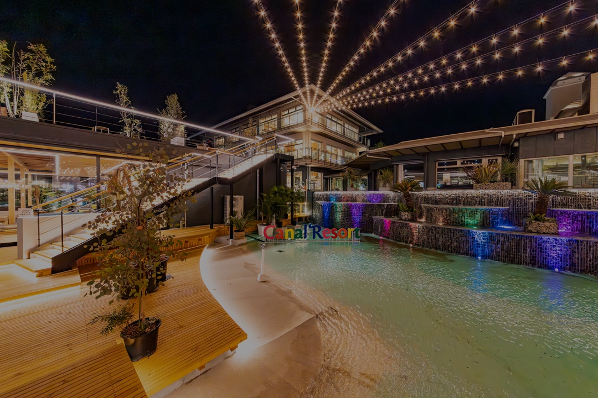

出典：キャナルリゾート公式サイト
SPOT 01
第1位: 1日中ダラダラできる！日本最大級の温泉＆サウナリゾート
キャナルリゾート（名古屋市中川区）
絶対に外さない最強のゴロゴロスポット！広大な岩盤浴ラウンジエリアには、カップルでくつろげるテントやハンモック、半個室の「おこもりスペース」が完備されています。数万冊のコミックを読みながら、時間を忘れて2人で無限にダラダラできちゃう天国のような空間です。
- エリア：愛知県名古屋市中川区
- 特徴：広大な岩盤浴ラウンジ・テント・ハンモック・半個室おこもりスペース完備